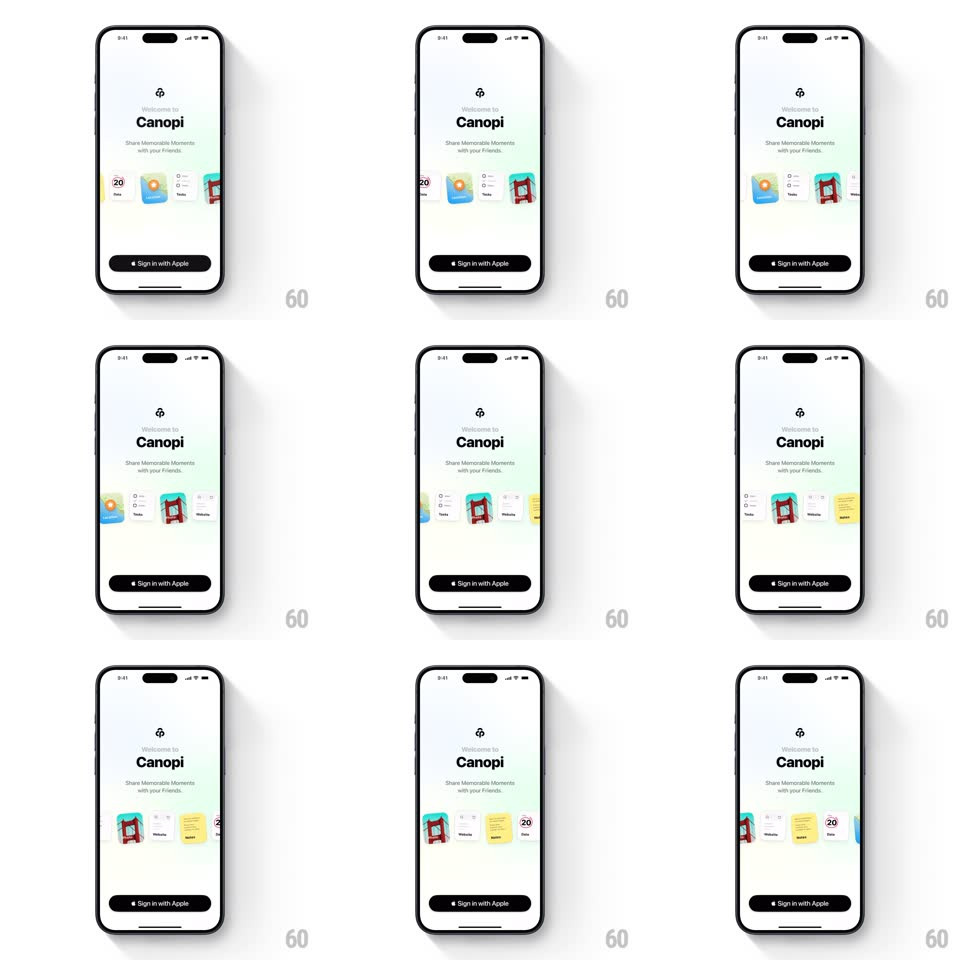

Media
Frame-by-frame

Rebuild this interaction 1:1: Canopi's welcome screen - under a "Welcome to Canopi / Share Memorable Moments with your Friends" header, a horizontal strip of small feature cards (calendar, checklist, photo board, notes) auto-scrolls in a continuous loop above a static "Sign in with Apple" button.

Rebuild this interaction 1:1: Canopi's welcome screen - under a "Welcome to Canopi / Share Memorable Moments with your Friends" header, a horizontal strip of small feature cards (calendar, checklist, photo board, notes) auto-scrolls in a continuous loop above a static "Sign in with Apple" button. ## Integration Integration: stack-agnostic spec - springs given as stiffness/damping, timed motions as duration + curve; map every value to your framework and animation library of choice. ## Scene Light welcome screen: app glyph, "Welcome to Canopi" title, subtitle, the card strip at mid-screen, and a black "Sign in with Apple" button pinned near the bottom. ## Motion spec Pattern: auto-playing infinite card marquee. - The strip scrolls horizontally at constant speed (~30px/s, linear, seamless loop) with cards duplicated to wrap without a seam. - Cards are small rounded rectangles with slight random tilt (+/-3deg) and soft shadows; they drift past without scaling. - On touch: scrolling pauses (decelerate over 200ms) and the strip becomes draggable with rubber-band edges; 2s after release, auto-scroll resumes (ramp back over 400ms). - Header and button never move. ## Calibration - Constant velocity is the point - no per-card snapping, no paging. - The loop must be mathematically seamless: duplicate the card set, offset by exactly one set width. ## Reduced motion Static strip showing the first set of cards; no auto-scroll. ## Don't miss - Cards peek from both screen edges - the strip is wider than the viewport. - The sign-in button stays put and never competes with the motion.